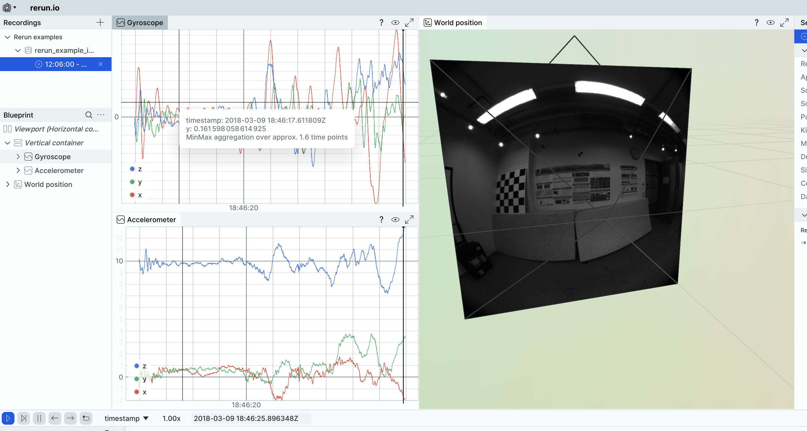
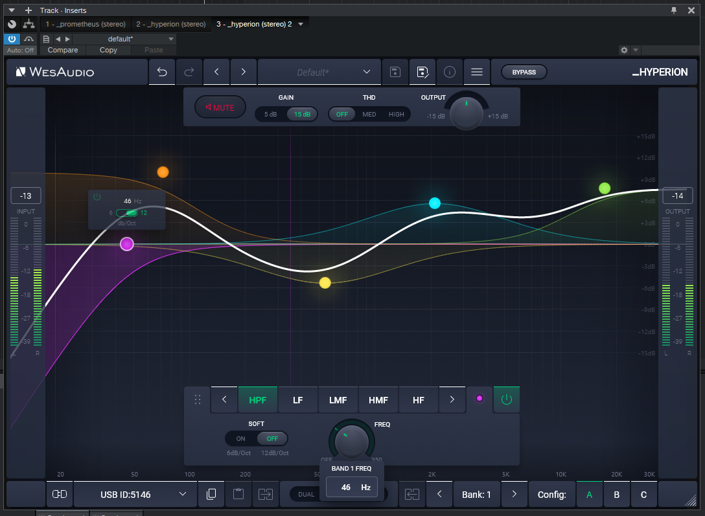
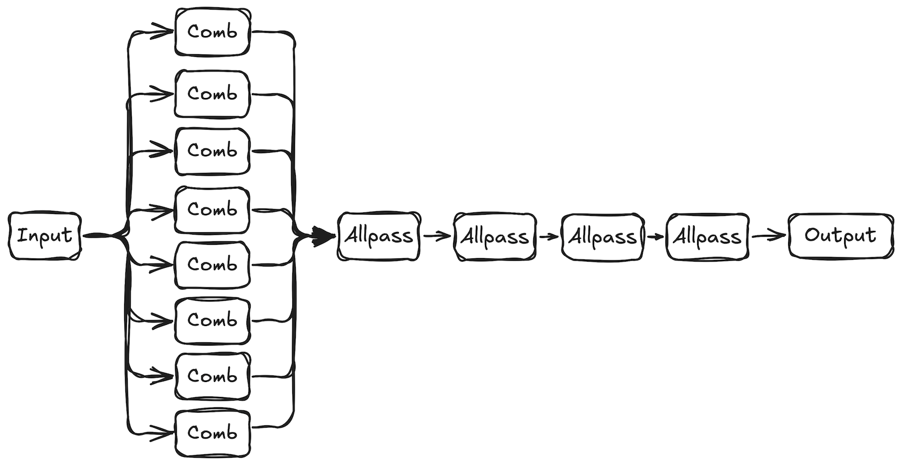
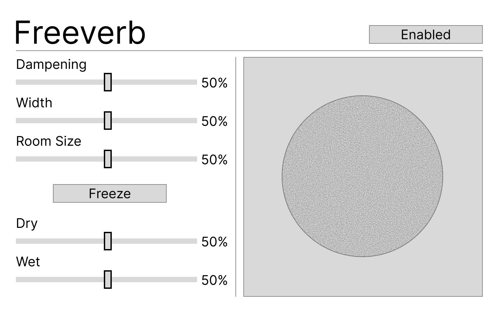
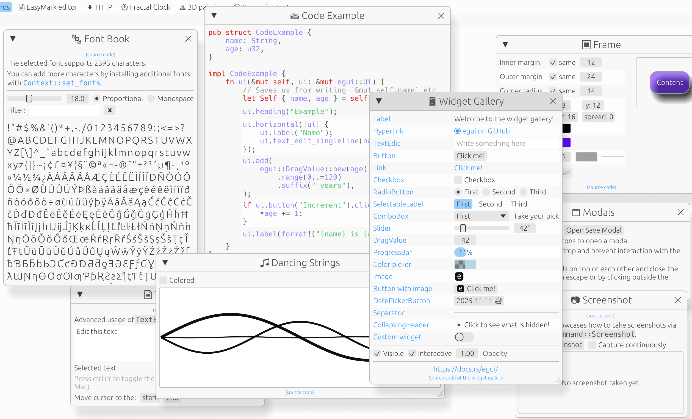
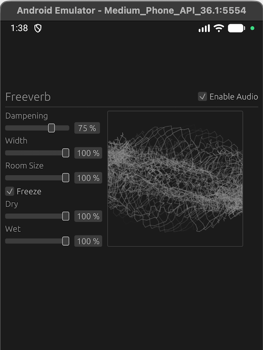
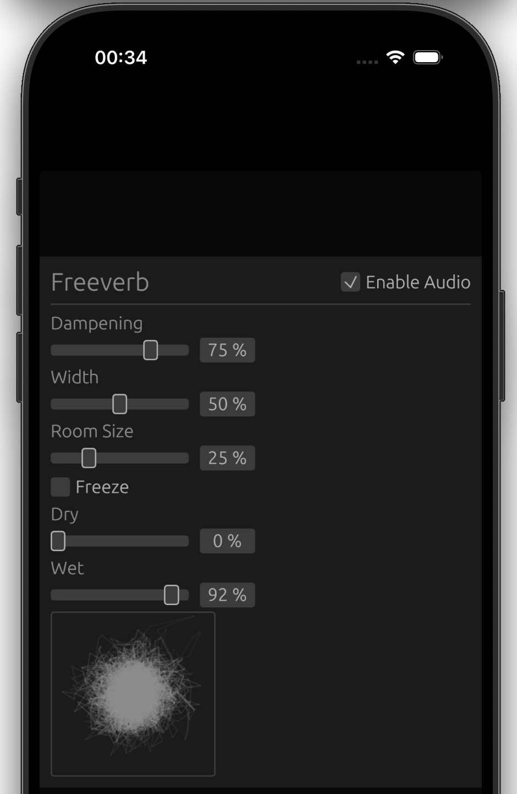
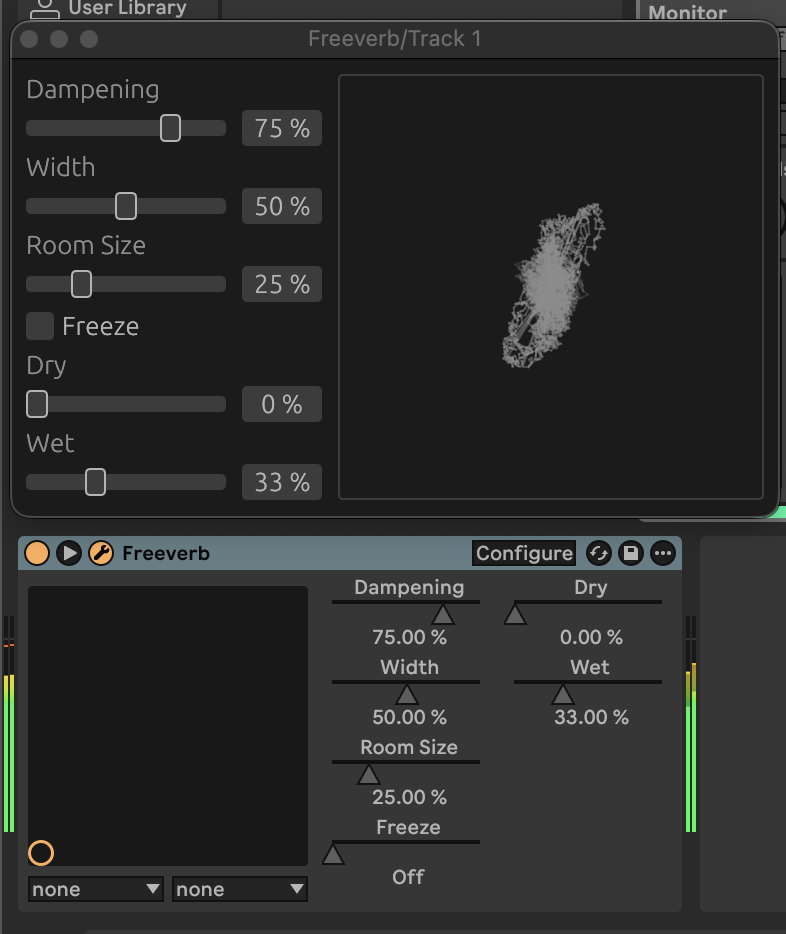
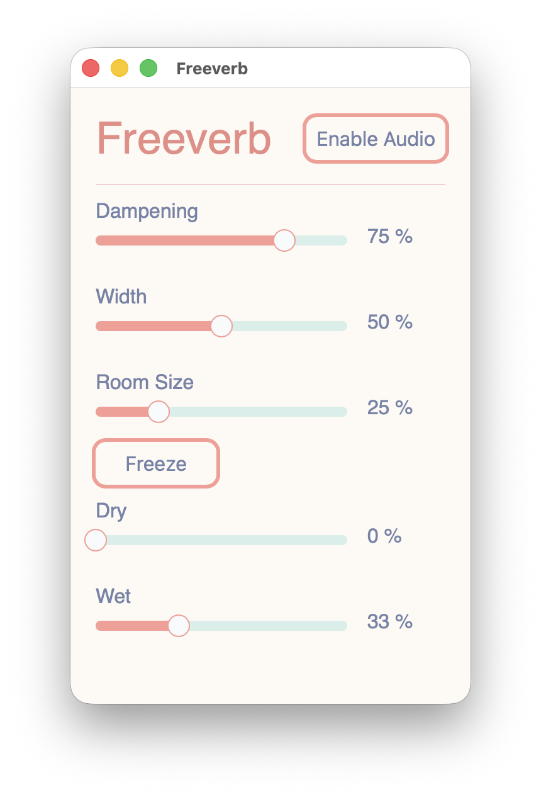
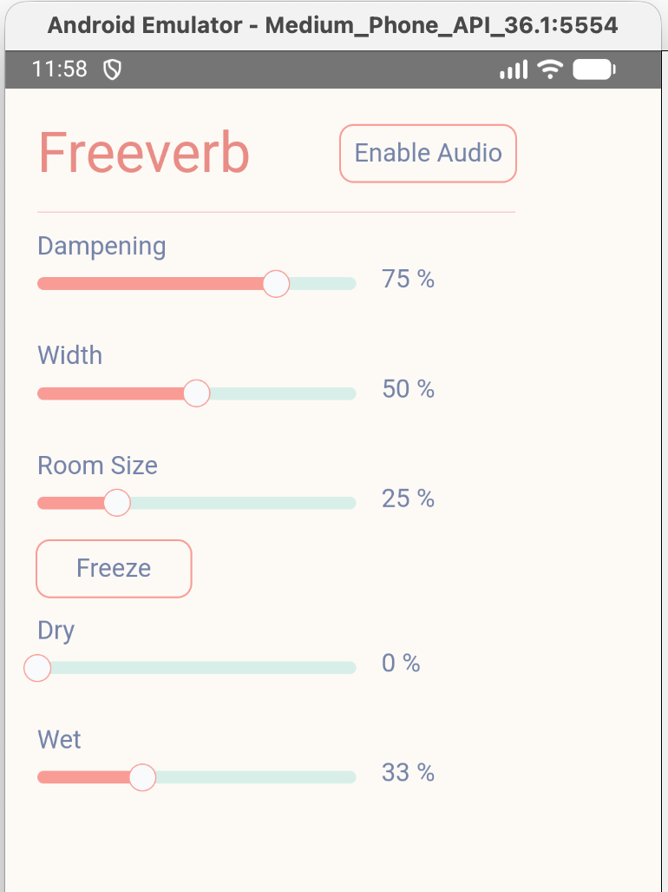

<!-- .slide: data-background-image="adc_title_card.png" --> --- ## About This Talk Rust in 2025 <!-- .element: class="fragment" --> Options for cross-platform development <!-- .element: class="fragment" --> Compare a couple of GUI frameworks <!-- .element: class="fragment" --> A disappointing lack of audio code <!-- .element: class="fragment" --> Extra stuff if there's time <!-- .element: class="fragment" --> --- ## About Me - <!-- .element: class="fragment" --> Software Engineer - <!-- .element: class="fragment" --> Born in Bristol, living in Berlin - <!-- .element: class="fragment" --> 2018: Talked about Rust at ADC - ["Introduction to Rust for Audio Developers"](https://www.youtube.com/watch?v=Yom9E-67bdI) - <!-- .element: class="fragment" --> 2019: Ableton ➡️ freelancing - <!-- .element: class="fragment" --> 2020: Started the [Koto](https://koto.dev) project - <!-- .element: class="fragment" --> ... - <!-- .element: class="fragment" --> 2025: Making music software again 🥳 --- ## Quick Rust Refresher - <!-- .element: class="fragment" --> Similar goals to C++ - <!-- .element: class="fragment" --> System level programming - <!-- .element: class="fragment" --> High-level, 'zero-cost' abstractions - <!-- .element: class="fragment" --> ...With a strong emphasis on _safety_ --- ## Safety Lots of safety checks baked into the compiler <!-- .element: class="fragment" --> - <!-- .element: class="fragment" --> Undefined behaviour is verboten - <!-- .element: class="fragment" --> No accidental memory access - <!-- .element: class="fragment" --> No shared mutable state - <!-- .element: class="fragment" --> Thread safety guarantees --- ## Unsafety - <!-- .element: class="fragment" --> Escape hatch when needed with `unsafe` - <!-- .element: class="fragment" --> Safe abstractions built around `unsafe` logic - e.g. `Vec<T>` uses `unsafe` internally - <!-- .element: class="fragment" --> `unsafe` code is a strong hint when debugging --- ## Great Defaults - <!-- .element: class="fragment" --> Sum types at the core of the language - (`enum` in Rust) - <!-- .element: class="fragment" --> Const-by-default, `mut` is opt-in - <!-- .element: class="fragment" --> `Result`-based error handling --- ## Great Tooling - <!-- .element: class="fragment" --> [`rustup`](https://rustup.rs) - Standard toolchain installer - <!-- .element: class="fragment" --> `cargo` - Standard build tool and package manager - <!-- .element: class="fragment" --> `crates.io` - Standard package repository - <!-- .element: class="fragment" --> `docs.rs` - Documentation for all `crates.io` crates --- ## It's Not Perfect - <!-- .element: class="fragment" --> You'll find your pet things to criticize in the language - <!-- .element: class="fragment" --> (Opt-in 'editions' enable backwards-compatible breaking changes) - <!-- .element: class="fragment" --> Lots of desirable WIP features are nightly-only --- ## Rust Timeline - <!-- .element: class="fragment" --> 2006: Started at Mozilla - <!-- .element: class="fragment" --> 2012: `0.1` - First public release - <!-- .element: class="fragment" --> 2015: `1.0` - First stable release - <!-- .element: class="fragment" --> ... - <!-- .element: class="fragment" --> 2025: `1.91` --- ## Rust in 2025 - <!-- .element: class="fragment" --> Used widely in production - <!-- .element: class="fragment" --> (...in some areas) - <!-- .element: class="fragment" --> Command line tools - <!-- .element: class="fragment" --> Networking - <!-- .element: class="fragment" --> Security - <!-- .element: class="fragment" --> Embedded systems ---  ---  --- ## Are We Gui Yet? [areweguiyet.com](https://areweguiyet.com) <!-- .element: class="fragment" --> > <!-- .element: class="fragment" --> The roots aren't deep but the seeds are planted. --- ## Are We Gui Yet? - UI in Rust has taken a while... - <!-- .element: class="fragment" --> Traditional OOP patterns are possible, although not very ergonomic - <!-- .element: class="fragment" --> Lots of projects trying different directions - <!-- .element: class="fragment" --> [A 2025 Survey of Rust GUI Libraries](https://www.boringcactus.com/2025/04/13/2025-survey-of-rust-gui-libraries.html) notes: - Rust has been an attractive space for research - The xilem project ---  notes: - Argues that what people want are App frameworks, GUI toolkits are only part of the picture ---  `egui` - [rerun.io](https://rerun.io) --- <img src="octasine.png" class="r-stretch" /> Iced - Octasine ---  Slint - WesAudio _HYPERION Editor --- ## Building Cross-platform Music Applications With Rust Pragmatic choice: use Rust from other languages and frameworks <!-- .element: class="fragment" --> JUCE, Flutter, React Native <!-- .element: class="fragment" --> Swift, Kotlin <!-- .element: class="fragment" --> --- ## Why Care About Full-Stack Rust? To minimize context switching <!-- .element: class="fragment" --> Everyone has a Maximum Languages Per Stack threshold <!-- .element: class="fragment" --> (My MLPS is 2-3) <!-- .element: class="fragment" --> --- ## The Plan - <!-- .element: class="fragment" --> Build a simple audio app in various Rust app frameworks - <!-- .element: class="fragment" --> Parameters sent to an audio processor - <!-- .element: class="fragment" --> Realtime audio data -> visualization - <!-- .element: class="fragment" --> Run on as many platforms as the framework supports --- ## Freeverb - <!-- .element: class="fragment" --> Well-known public domain algorithm - <!-- .element: class="fragment" --> See my 2018 talk for some background - <!-- .element: class="fragment" --> [github.com/irh/freeverb-rs](https://github.com/irh/freeverb-rs) ---  ---  --- ```rust #[derive(Clone)] struct FreeverbParameters { pub dampening: FloatParameter, pub width: FloatParameter, pub room_size: FloatParameter, pub freeze: BoolParameter, pub dry: FloatParameter, pub wet: FloatParameter, pub scope: BoolParameter, } ``` --- ```rust trait Parameter { fn name(&self) -> Arc<String>; fn id(&self) -> usize; fn value_type(&self) -> ValueType; fn default_user_value(&self) -> f32; fn value_converter(&self) -> Arc<dyn ValueConverter>; fn string_converter(&self) -> Arc<dyn StringConverter>; } ``` --- ```rust #[derive(Debug, Clone)] pub enum ToProcessor { BeginEdit(usize), SetParameter(usize, f32), EndEdit(usize), } pub trait PushMessage<T: Send> { fn push(&self, message: T) -> bool; } pub trait PopMessage<T: Send> { fn pop(&self) -> Option<T>; } ``` --- ```rust pub struct AudioStream<M: AudioModule> { ... } impl<M: AudioModule> AudioStream<M> { pub fn new() -> Result<Self> { ... } pub fn to_processor(&self) -> ToProcessorSender { ... } pub fn from_processor(&self) -> FromProcessorReceiver<M::Processor> { ... } } ``` --- `egui`  [egui.rs](https://egui.rs) --- ## `egui` - <!-- .element: class="fragment" --> An immediate-mode UI framework - <!-- .element: class="fragment" --> Popular as an embedded UI - <!-- .element: class="fragment" --> Companion app framework, `eframe` --- <video controls preload="metadata"> <source src="./egui_desktop.mp4" type="video/mp4"/> Video not supported. </video> --- ```rust[|2-3|4-7|8] fn main() -> Result<()> { eframe::run_native( "Freeverb", NativeOptions { viewport: ViewportBuilder::default().with_inner_size([400.0, 265.0]), ..Default::default() }, Box::new(|_| Ok(Box::new(App::new()?))), ) } ``` --- ```rust pub struct App { ui_state: FreeverbUiState, audio_stream: Option<AudioStream<FreeverbModule>>, } impl App { pub fn new() -> Result<Self> { ... } fn toggle_audio_stream(&mut self) { ... } } ``` --- ```rust[|1-2|3-5|7|8-9|10|12-17|14|15] impl eframe::App for App { fn update(&mut self, ctx: &egui::Context, _frame: &mut Frame) { if let Some(stream) = &self.audio_stream. { self.ui_state.receive_processor_messages(stream.from_processor()); } CentralPanel::default().show(ctx, |ui| { // Header ui.horizontal(|ui| { ui.label(RichText::new("Freeverb").text_style(TextStyle::Heading)); ui.with_layout(Layout::right_to_left(Align::Center), |ui| { let mut audio_enabled = self.audio_stream.is_some(); if ui.checkbox(&mut audio_enabled, "Enable Audio").changed() { self.toggle_audio_stream(); } }); }); ... ``` --- ```rust // Parameters ui.vertical(|ui| { ui.add(FloatSlider::new(&mut parameters.dampening, &self.to_processor)); ui.add(FloatSlider::new(&mut parameters.width, &self.to_processor)); ui.add(FloatSlider::new(&mut parameters.room_size, &self.to_processor)); ui.add(Checkbox::new(&mut parameters.freeze, &self.to_processor)); ui.add(FloatSlider::new(&mut parameters.dry, &self.to_processor)); ui.add(FloatSlider::new(&mut parameters.wet, &self.to_processor)); }); ``` --- ```rust[|1-14|2-5|6|7|9-11|16-28|21-23] let response = ui.add({ let mut slider = egui::Slider::new( &mut self.parameter.value, value_converter.min()..=value_converter.max(), ) .custom_formatter(|n, _| string_converter.to_string(n as f32)) .custom_parser(|s| string_converter.to_f32(s).map(|n| n as f64)); if let Some(unit) = string_converter.unit() { slider = slider.suffix(format!(" {unit}")); } slider }); if let Some(to_processor) = self.to_processor { if response.drag_started() { to_processor.push(ToProcessor::BeginEdit(id)); } if response.changed() { to_processor.push(ToProcessor::SetParameter(id, self.parameter.value)); } if response.drag_stopped() { to_processor.push(ToProcessor::EndEdit(id)); } } ``` --- ```rust[|2-4] // Scope let size = ui.available_size(); ui.add_sized( vec2(size.y, size.y), PhaseScope::new( self.to_processor.is_some(), self.state.scope_frames.iter().cloned(), ), ); ``` --- ```rust[|3,12|4-6|7-10] let stroke = ui.visuals().noninteractive().fg_stroke; let color = stroke.color; for (i, point) in points.enumerate() { let alpha = ((i as f32 / point_count) * 255.0 * 0.5) as u8; let color = Color32::from_rgba_unmultiplied(color.r(), color.g(), color.b(), alpha); painter.line_segment( [previous_point, point], Stroke::new(stroke.width, color), ); previous_point = point; } ``` ---  ---  --- <img src="egui_web.png" class="r-stretch" /> ---  --- Dioxus <img src="dioxus_splash.avif" class="r-stretch" /> [dioxuslabs.com](https://dioxuslabs.com) --- ## Dioxus - <!-- .element: class="fragment" --> An application framework in Rust using the web stack - <!-- .element: class="fragment" --> Uses the OS-provided webview by default - <!-- .element: class="fragment" --> Renderer-agnostic, a native renderer is in the works - <!-- .element: class="fragment" --> Tons of effort on tooling - <!-- .element: class="fragment" --> `dx` CLI tool for building, running, bundling - <!-- .element: class="fragment" --> Hot-loading of assets, UI code - <!-- .element: class="fragment" --> ...and now support for hot-patching of Rust code ---  --- ```rust[|1-2|3-11|12] fn main() { dioxus::LaunchBuilder::new() .with_cfg(desktop! { use dioxus::desktop::{Config, LogicalSize, WindowBuilder}; Config::new().with_window( WindowBuilder::new() .with_title("Freeverb") .with_inner_size(LogicalSize::new(310, 500)) ) }) .launch(App); } ``` --- ```rust[|1-2|3-4|6-7|9-10|11-22|7,11|25-30] #[component] pub fn App() -> Element { // Initialize the parameters when the app is first run. let parameters = use_hook(FreeverbParameters::default); // Create a signal for enabling or disabling the audio stream. let mut audio_enabled = use_signal(|| false); // Create or destroy the audio stream when `audio_enabled` changes. let audio_stream = use_memo(move || { if audio_enabled() { match AudioStream::new() { Ok(stream) => Some(FreeverbStream(Arc::new(stream))), Err(error) => { error!("Failed to create audio stream: {error}"); *audio_enabled.write() = false; None } } } else { None } }); // Derive a signal from the audio stream that provides the to_processor sender let to_processor = use_memo(move || { audio_stream() .as_ref() .map(|stream| stream.0.to_processor()) }); ... ``` --- ```rust[|3|4|6-20|15,16|22-27] ... rsx! { document::Link { rel: "stylesheet", href: MAIN_CSS } div { class: "header", div { class: "header-text", "Freeverb" } Toggle { pressed: audio_enabled(), on_pressed_change: move |pressed| *audio_enabled.write() = pressed, "Enable Audio" } } ParameterSlider { parameter: parameters.dampening, to_processor: to_processor } ParameterSlider { parameter: parameters.width, to_processor: to_processor } ParameterSlider { parameter: parameters.room_size, to_processor: to_processor } ParameterToggle { parameter: parameters.freeze, to_processor: to_processor } ParameterSlider { parameter: parameters.dry, to_processor: to_processor } ParameterSlider { parameter: parameters.wet, to_processor: to_processor } } ``` --- ```rust[|1-5|8-9|11-16|18-19|26-36|29|30-34] #[component] pub fn ParameterSlider( parameter: FloatParameter, to_processor: ReadSignal<Option<ToProcessorSender>>, ) -> Element { let id = parameter.id(); // Create a signal based on the parameter value. let mut value = use_signal(|| parameter.value); // Send updated values to the processor. use_effect(move || { if let Some(to_processor) = to_processor() { to_processor.push(ToProcessor::SetParameter(id, value())); } }); rsx! { document::Link { rel: "stylesheet", href: asset!("./slider.css") } div { class: "slider-name", "{name}" } div { slider::Slider { class: "slider", value: Some(SliderValue::Single(value())), on_value_change: move |new_value| match new_value{ SliderValue::Single(new_value) => { *value.write() = new_value as f32; } }, } } } ``` --- <img src="dioxus_web.png" class="r-stretch" /> ---  --- <video controls preload="metadata"> <source src="./dioxus_ios.mp4" type="video/mp4"/> Video not supported. </video> --- ## `audio-app` [github.com/irh/audio-app](https://github.com/irh/audio-app) <!-- .element: class="fragment" --> - <!-- .element: class="fragment" --> Hopefully serves as a useful entry point for learning - <!-- .element: class="fragment" --> Also includes examples using `Iced` and `Vizia` - <!-- .element: class="fragment" --> Contributions are welcome - <!-- .element: class="fragment" --> New frameworks, bug fixes, better docs --- ## Closing Thoughts - <!-- .element: class="fragment" --> Rust + Audio Dev is coming along nicely - <!-- .element: class="fragment" --> Full-stack cross-platform Rust music app dev is now _possible_ - <!-- .element: class="fragment" --> ...with plenty of rough edges... - <!-- .element: class="fragment" --> ...but things are improving quickly! - <!-- .element: class="fragment" --> The more the merrier, get involved! - <!-- .element: class="fragment" --> A good place to start: [Rust Audio](https://rust.audio) - <!-- .element: class="fragment" --> If you have a budget, please sponsor open-source projects --- # THANKS FOR YOUR TIME [github.com/irh/audio-app](https://github.com/irh/audio-app) --- ## Extras #### More Gui Frameworks #### Audio Crates #### Platform Details #### No Dioxus Scope? --- ## More GUI Frameworks to Check Out - <!-- .element: class="fragment" --> [Iced](https://iced.rs) - <!-- .element: class="fragment" --> Popular for apps and plugins - <!-- .element: class="fragment" --> Elm-architecture in Rust - <!-- .element: class="fragment" --> [Vizia](https://book.vizia.dev) - <!-- .element: class="fragment" --> Also has `nih_plug` support - <!-- .element: class="fragment" --> Based on reactive data bindings via lenses --- ## More GUI Frameworks to Check Out - <!-- .element: class="fragment" --> [Slint](https://slint.dev) - <!-- .element: class="fragment" --> Commercially backed, founded by some ex-Qt devs - <!-- .element: class="fragment" --> UIs built in a reactive language, with bindings for app logic in Rust, C++, Python, Node - <!-- .element: class="fragment" --> They've had a focus on embedded, but are improving support for other platforms - See [Making Slint Desktop Ready (Oct 2025)](https://slint.dev/blog/making-slint-desktop-ready) --- ## More GUI Frameworks to Check Out - <!-- .element: class="fragment" --> [Bevy](https://bevy.org) - <!-- .element: class="fragment" --> A popular open source ECS-based game engine - <!-- .element: class="fragment" --> Highly modular - <!-- .element: class="fragment" --> UI is bare-bones now, but is under active development --- ## Audio Crates - <!-- .element: class="fragment" --> [`cpal`](https://github.com/rustaudio/cpal) - Cross-Platform Audio Layer - <!-- .element: class="fragment" --> [`midir`](https://github.com/Boddlnagg/midir) - Cross-Platform MIDI Layer --- ## Audio Crates... - [`dasp`](https://github.com/RustAudio/dasp) - Lots of DSP utilities - <!-- .element: class="fragment" --> [`FunDSP`](https://github.com/SamiPerttu/fundsp) - Fancy audio processing - `sine_hz(f) * f * m + f >> sine()` --- ## Audio Crates... - [`Symphonia`](https://github.com/pdeljanov/Symphonia) - Decoder for tons of audio formats - <!-- .element: class="fragment" --> [`firewheel`](https://github.com/BillyDM/Firewheel) - WIP New audio engine for [Bevy](https://bevy.org) --- ## Audio Crates... - [`nih-plug`](https://github.com/robbert-vdh/nih-plug) - Plugin abstraction framework - <!-- .element: class="fragment" --> BYO UI Framework - <!-- .element: class="fragment" --> Targets: CLAP, VST3, Standalone - <!-- .element: class="fragment" --> (AU possible via CLAP wrapper) --- ## Platform Details #### Plugins - <!-- .element: class="fragment" --> Plugins are using `nih_plug` - <!-- .element: class="fragment" --> A plugin host abstraction framework - <!-- .element: class="fragment" --> It supports `VST3`, `CLAP`, and standalone - <!-- .element: class="fragment" --> (`AU` possible through [clap-wrapper](https://github.com/free-audio/clap-wrapper)) - <!-- .element: class="fragment" --> My approach in this project was 'app -> plugin' rather than the other way around - <!-- .element: class="fragment" --> ...which made things harder. - <!-- .element: class="fragment" --> ...so no Iced or Vizia yet. --- ## Platform Details #### iPhone - <!-- .element: class="fragment" --> Not much to it, using a pre-build script to compile the rust binary - <!-- .element: class="fragment" --> The app calls the binary's `main` function directly - <!-- .element: class="fragment" --> An `AVAudioSession` needs to be created - <!-- .element: class="fragment" --> The [`objc2`](https://docs.rs/objc2/latest/objc2/) crates are used to make platform API calls --- ## Platform Details #### Android - <!-- .element: class="fragment" --> Build the application as a `cdylib` - <!-- .element: class="fragment" --> Use a `NativeActivity` that calls into an exported `android_main` function - <!-- .element: class="fragment" --> Runtime permission for microphone access needs to be requested - <!-- .element: class="fragment" --> Platform API calls via the [`ndk`](https://crates.io/crates/ndk) and [`jni`](https://crates.io/crates/jni) crates. - <!-- .element: class="fragment" --> The [`android-permissions`](https://crates.io/crates/android-permissions) helper crate is handy --- ## Platform Details #### Web - <!-- .element: class="fragment" --> The processor runs in an `AudioWorklet` - <!-- .element: class="fragment" --> ...in a separate `WebAssembly` context - <!-- .element: class="fragment" --> `Wasm` atomics in Rust are [currently unstable](https://github.com/rust-lang/rust/issues/77839) - <!-- .element: class="fragment" --> So the `audio-app` project jumps through hoops that could be avoided on nightly - <!-- .element: class="fragment" --> Getting the `.wasm` loaded is hard - <!-- .element: class="fragment" --> Visualization data gets serialized --- ## No Scope for Dioxus? - <!-- .element: class="fragment" --> On the desktop, the application runs as native code - <!-- .element: class="fragment" --> So browser APIs like `canvas` aren't available - <!-- .element: class="fragment" --> A trick involving layering the webview over a `wgpu` window is possible... - <!-- .element: class="fragment" --> ...but wouldn't be cross-platform so I didn't want to go that way - <!-- .element: class="fragment" --> The WIP native renderer will make a cross-platform canvas possible - <!-- .element: class="fragment" --> When? I hope soon!